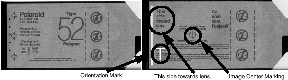

| NOTE: | Only the film should be projecting into the Gantry bore when complete. The phantom is used only to position and hold the film in the gantry bore, Illustration 6. |
Orient the side of the film side marked “This side toward lens” towards iso center, see Illustration 4. When exposed and developed later, the film will show the alignment of the x-ray beam with respect to the table, as viewed from the X-Ray tube in the 3 o’clock position.
Illustration 4: Polaroid Film, Type 52
